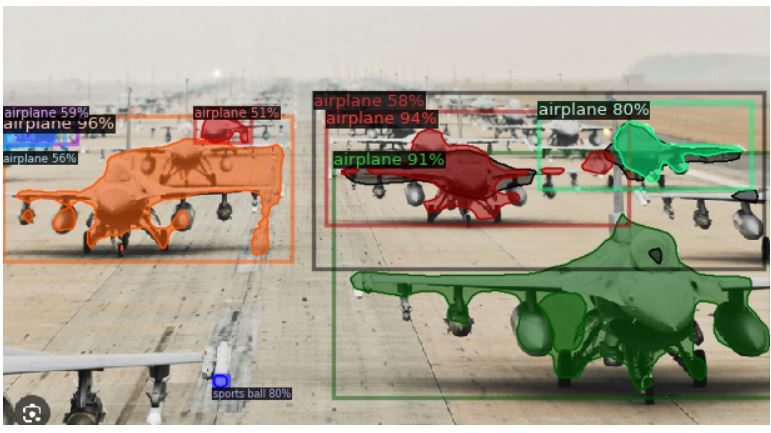
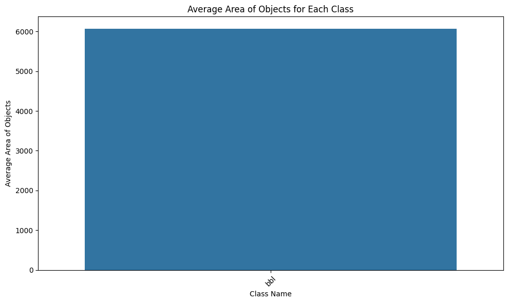
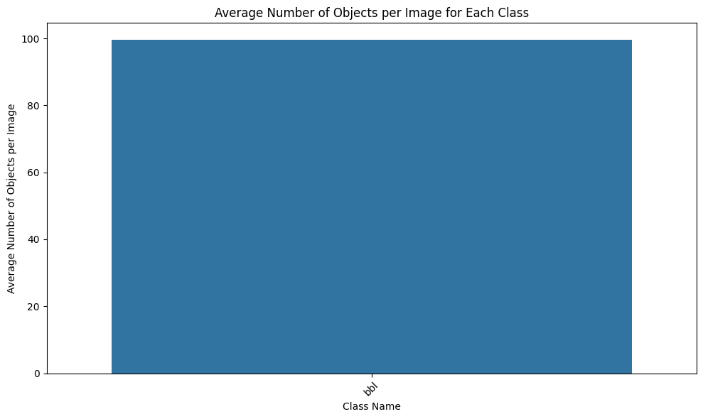

In this post, we have applied the advanced instance segmentation AI algorithm of Mask R-CNN to detect bubbles in pool boiling on microstructured surfaces.
!python -m pip install pyyaml==5.1
import sys, os, distutils.core
# Note: This is a faster way to install detectron2 in Colab, but it does not include all functionalities (e.g. compiled operators).
# See https://detectron2.readthedocs.io/tutorials/install.html for full installation instructions
!git clone 'https://github.com/facebookresearch/detectron2'
dist = distutils.core.run_setup("./detectron2/setup.py")
!python -m pip install {' '.join([f"'{x}'" for x in dist.install_requires])}
sys.path.insert(0, os.path.abspath('./detectron2'))
# Properly install detectron2. (Please do not install twice in both ways)
# !python -m pip install 'git+https://github.com/facebookresearch/detectron2.git'import torch, detectron2
!nvcc --version
TORCH_VERSION = ".".join(torch.__version__.split(".")[:2])
CUDA_VERSION = torch.__version__.split("+")[-1]
print("torch: ", TORCH_VERSION, "; cuda: ", CUDA_VERSION)
print("detectron2:", detectron2.__version__)# Some basic setup:
# Setup detectron2 logger
import detectron2
from detectron2.utils.logger import setup_logger
setup_logger()
# import some common libraries
import numpy as np
import os, json, cv2, random
from google.colab.patches import cv2_imshow
# import some common detectron2 utilities
from detectron2 import model_zoo
from detectron2.engine import DefaultPredictor
from detectron2.config import get_cfg
from detectron2.utils.visualizer import Visualizer
from detectron2.data import MetadataCatalog, DatasetCatalogim = cv2.imread("/content/drive/MyDrive/ColabNotebooks/abs.png")
cv2_imshow(im)cfg = get_cfg()
cfg.merge_from_file(model_zoo.get_config_file("COCO-InstanceSegmentation/mask_rcnn_R_50_FPN_3x.yaml"))
cfg.MODEL.ROI_HEADS.SCORE_THRESH_TEST = 0.5 # set threshold for this model
# Find a model from detectron2's model zoo. https://github.com/facebookresearch/detectron2/blob/main/MODEL_ZOO.md
cfg.MODEL.WEIGHTS = model_zoo.get_checkpoint_url("COCO-InstanceSegmentation/mask_rcnn_R_50_FPN_3x.yaml")
predictor = DefaultPredictor(cfg)
outputs = predictor(im)# look at the outputs - tensors and bounding boxes.
print(outputs["instances"].pred_classes)
print(outputs["instances"].pred_boxes)# We can use `Visualizer` to draw the predictions on the image.
v = Visualizer(im[:, :, ::-1], MetadataCatalog.get(cfg.DATASETS.TRAIN[0]), scale=0.8)
out = v.draw_instance_predictions(outputs["instances"].to("cpu"))
cv2_imshow(out.get_image()[:, :, ::-1])
from detectron2.data.datasets import register_coco_instances
register_coco_instances("my_dataset_train", {}, "/content/drive/MyDrive/ColabNotebooks/data/bbl2/train/bubble.json", "/content/drive/MyDrive/ColabNotebooks/data/bbl2/train")
register_coco_instances("my_dataset_val", {}, "/content/drive/MyDrive/ColabNotebooks/data/bbl2/val/val.json", "/content/drive/MyDrive/ColabNotebooks/data/bbl2/val")train_metadata = MetadataCatalog.get("my_dataset_train")
train_dataset_dicts = DatasetCatalog.get("my_dataset_train")val_metadata = MetadataCatalog.get("my_dataset_val")
val_dataset_dicts = DatasetCatalog.get("my_dataset_val")from matplotlib import pyplot as plt
for d in random.sample(train_dataset_dicts, 2):
img = cv2.imread(d["file_name"])
visualizer = Visualizer(img[:, :, ::-1], metadata=train_metadata, scale=0.5)
vis = visualizer.draw_dataset_dict(d)
plt.imshow(vis.get_image()[:, :, ::-1])
plt.show()cfg = get_cfg()
cfg.OUTPUT_DIR = "/content/drive/MyDrive/ColabNotebooks/models/Detectron2_Models"
cfg.merge_from_file(model_zoo.get_config_file("COCO-InstanceSegmentation/mask_rcnn_R_50_FPN_3x.yaml"))
cfg.DATASETS.TRAIN = ("my_dataset_train",)
cfg.DATASETS.TEST = ()
cfg.DATALOADER.NUM_WORKERS = 2
cfg.MODEL.WEIGHTS = model_zoo.get_checkpoint_url("COCO-InstanceSegmentation/mask_rcnn_R_50_FPN_3x.yaml") # Let training initialize from model zoo
cfg.SOLVER.IMS_PER_BATCH = 4 # This is the real "batch size" commonly known to deep learning people
cfg.SOLVER.BASE_LR = 0.00025 # pick a good LR
cfg.SOLVER.MAX_ITER = 8000 # 1000 iterations seems good enough for this dataset
cfg.SOLVER.STEPS = [] # do not decay learning rate
cfg.MODEL.ROI_HEADS.BATCH_SIZE_PER_IMAGE = 512 # Default is 512, using 256 for this dataset.
cfg.MODEL.ROI_HEADS.NUM_CLASSES = 1 # We have 1 classes.
# NOTE: this config means the number of classes, without the background. Do not use num_classes+1 here.
os.makedirs(cfg.OUTPUT_DIR, exist_ok=True)
trainer = DefaultTrainer(cfg) #Create an instance of of DefaultTrainer with the given congiguration
trainer.resume_or_load(resume=False) #Load a pretrained model if available (resume training) or start training from scratch if no pretrained model is availabletrainer.train() #Start the training process
import yaml
# Save the configuration to a config.yaml file
# Save the configuration to a config.yaml file
config_yaml_path = "/content/drive/MyDrive/ColabNotebooks/models/Detectron2_Models/config.yaml"
with open(config_yaml_path, 'w') as file:
yaml.dump(cfg, file)# Inference should use the config with parameters that are used in training
# cfg now already contains everything we've set previously. We changed it a little bit for inference:
cfg.MODEL.WEIGHTS = os.path.join(cfg.OUTPUT_DIR, "model_final.pth") # path to the model we just trained
cfg.MODEL.ROI_HEADS.SCORE_THRESH_TEST = 0.2 # set a custom testing threshold
predictor = DefaultPredictor(cfg)from detectron2.utils.visualizer import ColorMode
for d in random.sample(val_dataset_dicts, 1): #select number of images for display
im = cv2.imread(d["file_name"])
outputs = predictor(im)
v = Visualizer(im[:, :, ::-1],
metadata=val_metadata,
scale=0.5,
instance_mode=ColorMode.IMAGE_BW # remove the colors of unsegmented pixels. This option is only available for segmentation models
)
out = v.draw_instance_predictions(outputs["instances"].to("cpu"))
cv2_imshow(out.get_image()[:, :, ::-1])from detectron2.evaluation import COCOEvaluator, inference_on_dataset
from detectron2.data import build_detection_test_loader
evaluator = COCOEvaluator("my_dataset_val", output_dir="./output")
val_loader = build_detection_test_loader(cfg, "my_dataset_val")
print(inference_on_dataset(predictor.model, val_loader, evaluator))
# another equivalent way to evaluate the model is to use `trainer.test`new_im = cv2.imread("/content/drive/MyDrive/ColabNotebooks/data/bbl2/15.9397/frame_00000.png")
outputs = predictor(new_im)
# We can use `Visualizer` to draw the predictions on the image.
v = Visualizer(new_im[:, :, ::-1], metadata=train_metadata)
out = v.draw_instance_predictions(outputs["instances"].to("cpu"))
cv2_imshow(out.get_image()[:, :, ::-1])# Directory path to the input images folder
input_images_directory = "/content/drive/MyDrive/ColabNotebooks/data/bbl2/15.9397"
# Output directory where the segmented images will be saved
output_directory = "/content/drive/MyDrive/ColabNotebooks/data/bbl2/test-result" # Replace this with the path to your desired output directory
# Loop over the images in the input folder
for image_filename in os.listdir(input_images_directory):
image_path = os.path.join(input_images_directory, image_filename)
new_im = cv2.imread(image_path)
# Perform prediction on the new image
outputs = predictor(new_im) # Format is documented at https://detectron2.readthedocs.io/tutorials/models.html#model-output-format
# We can use `Visualizer` to draw the predictions on the image.
v = Visualizer(new_im[:, :, ::-1], metadata=train_metadata)
out = v.draw_instance_predictions(outputs["instances"].to("cpu"))
# Create the output filename with _result extension
result_filename = os.path.splitext(image_filename)[0] + "_result.png"
output_path = os.path.join(output_directory, result_filename)
# Save the segmented image
cv2.imwrite(output_path, out.get_image()[:, :, ::-1])
print("Segmentation of all images completed.")import csv
from skimage.measure import regionprops, label
# Assuming you have already defined the 'predictor' object and loaded the model.
# Also, make sure 'metadata' is defined appropriately.
# Directory path to the input images folder
input_images_directory = "/content/drive/MyDrive/ColabNotebooks/data/bbl2/15.9397"
# Output directory where the CSV file will be saved
output_csv_path = "/content/drive/MyDrive/ColabNotebooks/data/bbl2/test-result/output_objects1.csv" # Replace this with the path to your desired output CSV file
# Open the CSV file for writing
with open(output_csv_path, 'w', newline='') as csvfile:
csvwriter = csv.writer(csvfile)
# Write the header row in the CSV file
csvwriter.writerow(["File Name", "Class Name", "Object Number", "Area", "Centroid", "BoundingBox"]) # Add more columns as needed for other properties
# Loop over the images in the input folder
for image_filename in os.listdir(input_images_directory):
image_path = os.path.join(input_images_directory, image_filename)
new_im = cv2.imread(image_path)
# Perform prediction on the new image
outputs = predictor(new_im) # Format is documented at https://detectron2.readthedocs.io/tutorials/models.html#model-output-format
# Convert the predicted mask to a binary mask
mask = outputs["instances"].pred_masks.to("cpu").numpy().astype(bool)
# Get the predicted class labels
class_labels = outputs["instances"].pred_classes.to("cpu").numpy()
# Debugging: print class_labels and metadata.thing_classes
#print("Class Labels:", class_labels)
#print("Thing Classes:", train_metadata.thing_classes)
# Use skimage.measure.regionprops to calculate object parameters
labeled_mask = label(mask)
props = regionprops(labeled_mask)
# Write the object-level information to the CSV file
for i, prop in enumerate(props):
object_number = i + 1 # Object number starts from 1
area = prop.area
centroid = prop.centroid
bounding_box = prop.bbox
# Check if the corresponding class label exists
if i < len(class_labels):
class_label = class_labels[i]
class_name = train_metadata.thing_classes[class_label]
else:
# If class label is not available (should not happen), use 'Unknown' as class name
class_name = 'Unknown'
# Write the object-level information to the CSV file
csvwriter.writerow([image_filename, class_name, object_number, area, centroid, bounding_box]) # Add more columns as needed for other properties
print("Object-level information saved to CSV file.")import pandas as pd
import seaborn as sns
import matplotlib.pyplot as plt
# Path to the CSV file containing the object-level information
csv_file_path = "/content/drive/MyDrive/ColabNotebooks/data/bbl2/test-result/output_objects1.csv" # Update with your CSV file path
# Load the CSV file into a pandas DataFrame
df = pd.read_csv(csv_file_path)
# Get class names from train_metadata.thing_classes
class_names = train_metadata.thing_classes
# Group the data by both "File Name" and "Class Name" and calculate the average number of objects per image for each class
# first group the data by both "File Name" and "Class Name" and count the number of objects within each group.
#Then, group the data by "Class Name" only and calculate the mean of the counts, which gives us the average number of objects per image for each class.
avg_objects_per_class = df.groupby(["File Name", "Class Name"])["Object Number"].count().reset_index()
avg_objects_per_class = avg_objects_per_class.groupby("Class Name")["Object Number"].mean().reset_index()
# Plot: Average number of objects per image for each class
plt.figure(figsize=(10, 6))
sns.barplot(x="Class Name", y="Object Number", data=avg_objects_per_class, ci=None, order=class_names)
plt.xticks(rotation=45)
plt.xlabel("Class Name")
plt.ylabel("Average Number of Objects per Image")
plt.title("Average Number of Objects per Image for Each Class")
plt.tight_layout()
plt.show()
# Group the data by class and calculate the average area of objects for each class
avg_area_per_class = df.groupby("Class Name")["Area"].mean().reset_index()
# Plot: Average area of objects for each class
plt.figure(figsize=(10, 6))
sns.barplot(x="Class Name", y="Area", data=avg_area_per_class, ci=None, order=class_names)
plt.xticks(rotation=45)
plt.xlabel("Class Name")
plt.ylabel("Average Area of Objects")
plt.title("Average Area of Objects for Each Class")
plt.tight_layout()
plt.show()

import os
import cv2
import numpy as np
import torch
from detectron2.utils.visualizer import Visualizer
# Directory path to the input images folder
input_images_directory = "/content/drive/MyDrive/ColabNotebooks/data/bbl2/15.9397"
# Output directory where the segmented images will be saved
output_directory = "/content/drive/MyDrive/ColabNotebooks/data/bbl2/test-result-inst" # Replace this with the path to your desired output directory
# Loop over the images in the input folder
for image_filename in os.listdir(input_images_directory):
image_path = os.path.join(input_images_directory, image_filename)
new_im = cv2.imread(image_path)
# Perform prediction on the new image
outputs = predictor(new_im) # Format is documented at https://detectron2.readthedocs.io/tutorials/models.html#model-output-format
# Create a dictionary to store the mask for each class with unique integer labels
class_masks = {class_name: torch.zeros_like(outputs["instances"].pred_masks[0], dtype=torch.uint8, device=torch.device("cuda:0"))
for class_name in train_metadata.thing_classes}
# Assign a unique integer label to each object in the mask
for i, pred_class in enumerate(outputs["instances"].pred_classes):
class_name = train_metadata.thing_classes[pred_class]
class_masks[class_name] = torch.where(outputs["instances"].pred_masks[i].to(device=torch.device("cuda:0")),
i + 1,
class_masks[class_name])
# Save the masks for each class with unique integer labels
for class_name, class_mask in class_masks.items():
# Convert the tensor to a NumPy array and then to a regular (CPU) array
class_mask_np = class_mask.cpu().numpy()
# Create the output filename with _class_name_result.png extension
class_filename = os.path.splitext(image_filename)[0] + f"_{class_name}_result.png"
class_output_path = os.path.join(output_directory, class_filename)
# Save the image with unique integer labels
cv2.imwrite(class_output_path, class_mask_np.astype(np.uint8))## reuslts are not that good, without augmentation results are better
# Install detectron2 (Colab setup)
!python -m pip install pyyaml==5.1
import sys, os, distutils.core
!git clone 'https://github.com/facebookresearch/detectron2'
dist = distutils.core.run_setup("./detectron2/setup.py")
!python -m pip install {' '.join([f"'{x}'" for x in dist.install_requires])}
sys.path.insert(0, os.path.abspath('./detectron2'))
# Imports
import torch, detectron2
from detectron2.utils.logger import setup_logger
setup_logger()
import numpy as np
import os, json, cv2, random
from detectron2 import model_zoo
from detectron2.config import get_cfg
from detectron2.data import MetadataCatalog, DatasetCatalog
# Register datasets
from detectron2.data.datasets import register_coco_instances
register_coco_instances(
"my_dataset_train", {},
"/content/drive/MyDrive/ColabNotebooks/data/bbl2/train/bubble.json",
"/content/drive/MyDrive/ColabNotebooks/data/bbl2/train"
)
register_coco_instances(
"my_dataset_val", {},
"/content/drive/MyDrive/ColabNotebooks/data/bbl2/val/val.json",
"/content/drive/MyDrive/ColabNotebooks/data/bbl2/val"
)
train_metadata = MetadataCatalog.get("my_dataset_train")
val_metadata = MetadataCatalog.get("my_dataset_val")
# =========================
# CONFIG
# =========================
cfg = get_cfg()
cfg.OUTPUT_DIR = "/content/drive/MyDrive/ColabNotebooks/models/Detectron2_Models"
cfg.merge_from_file(
model_zoo.get_config_file("COCO-InstanceSegmentation/mask_rcnn_R_50_FPN_3x.yaml")
)
#cfg.INPUT.MIN_SIZE_TRAIN = (512,) # or (384,) if still OOM
#cfg.INPUT.MAX_SIZE_TRAIN = 512
cfg.DATASETS.TRAIN = ("my_dataset_train",)
cfg.DATASETS.TEST = () # you can later set ("my_dataset_val",)
cfg.DATALOADER.NUM_WORKERS = 2
cfg.MODEL.WEIGHTS = model_zoo.get_checkpoint_url(
"COCO-InstanceSegmentation/mask_rcnn_R_50_FPN_3x.yaml"
)
cfg.SOLVER.IMS_PER_BATCH = 4
cfg.SOLVER.BASE_LR = 0.00025
cfg.SOLVER.MAX_ITER = 8000
cfg.SOLVER.STEPS = []
cfg.MODEL.ROI_HEADS.BATCH_SIZE_PER_IMAGE = 512
cfg.MODEL.ROI_HEADS.NUM_CLASSES = 1
os.makedirs(cfg.OUTPUT_DIR, exist_ok=True)
# =========================
# DATA AUGMENTATION (KEY PART)
# =========================
from detectron2.engine import DefaultTrainer
from detectron2.data import build_detection_train_loader, DatasetMapper
import detectron2.data.transforms as T
class MyTrainer(DefaultTrainer):
@classmethod
def build_train_loader(cls, cfg):
mapper = DatasetMapper(
cfg,
is_train=True,
augmentations=[
T.RandomFlip(prob=0.5, horizontal=True),
T.RandomBrightness(0.9, 1.1),
T.RandomContrast(0.9, 1.1),
],
use_instance_mask=True,
)
return build_detection_train_loader(cfg, mapper=mapper)
# =========================
# TRAINING
# =========================
trainer = MyTrainer(cfg)
trainer.resume_or_load(resume=False)
trainer.train()from detectron2.engine import DefaultPredictor
cfg.MODEL.WEIGHTS = os.path.join(cfg.OUTPUT_DIR, "model_final.pth")
cfg.MODEL.ROI_HEADS.SCORE_THRESH_TEST = 0.1 # adjust if needed
cfg.DATASETS.TEST = ("my_dataset_val",) # optional but good practice
predictor = DefaultPredictor(cfg)import cv2
new_im = cv2.imread("/content/drive/MyDrive/ColabNotebooks/data/bbl2/test-result/frame_00031_result.png")
outputs = predictor(new_im)from detectron2.utils.visualizer import Visualizer
from detectron2.utils.visualizer import ColorMode
from google.colab.patches import cv2_imshow
# v = Visualizer(
# new_im[:, :, ::-1],
# metadata=train_metadata,
# scale=1.0,
# instance_mode=ColorMode.IMAGE_BW
# )
# out = v.draw_instance_predictions(outputs["instances"].to("cpu"))
# import matplotlib.pyplot as plt
# plt.figure(figsize=(10,10))
# plt.imshow(out.get_image())
# plt.axis("off")
# plt.show()
v = Visualizer(new_im[:, :, ::-1], metadata=train_metadata)
out = v.draw_instance_predictions(outputs["instances"].to("cpu"))
cv2_imshow(out.get_image()[:, :, ::-1])# Directory path to the input images folder
input_images_directory = "/content/drive/MyDrive/ColabNotebooks/data/bbl2/test"
# Output directory where the segmented images will be saved
output_directory = "/content/drive/MyDrive/ColabNotebooks/data/bbl2/test-result" # Replace this with the path to your desired output directory
# Loop over the images in the input folder
for image_filename in os.listdir(input_images_directory):
image_path = os.path.join(input_images_directory, image_filename)
new_im = cv2.imread(image_path)
# Perform prediction on the new image
outputs = predictor(new_im) # Format is documented at https://detectron2.readthedocs.io/tutorials/models.html#model-output-format
# We can use `Visualizer` to draw the predictions on the image.
v = Visualizer(new_im[:, :, ::-1], metadata=train_metadata)
out = v.draw_instance_predictions(outputs["instances"].to("cpu"))
# Create the output filename with _result extension
result_filename = os.path.splitext(image_filename)[0] + "_result.png"
output_path = os.path.join(output_directory, result_filename)
# Save the segmented image
cv2.imwrite(output_path, out.get_image()[:, :, ::-1])
print("Segmentation of all images completed.")import csv
from skimage.measure import regionprops, label
# Assuming you have already defined the 'predictor' object and loaded the model.
# Also, make sure 'metadata' is defined appropriately.
# Directory path to the input images folder
input_images_directory = "/content/drive/MyDrive/ColabNotebooks/data/bbl2/test"
# Output directory where the CSV file will be saved
output_csv_path = "/content/drive/MyDrive/ColabNotebooks/data/bbl2/test-result/output_objects.csv" # Replace this with the path to your desired output CSV file
# Open the CSV file for writing
with open(output_csv_path, 'w', newline='') as csvfile:
csvwriter = csv.writer(csvfile)
# Write the header row in the CSV file
csvwriter.writerow(["File Name", "Class Name", "Object Number", "Area", "Centroid", "BoundingBox"]) # Add more columns as needed for other properties
# Loop over the images in the input folder
for image_filename in os.listdir(input_images_directory):
image_path = os.path.join(input_images_directory, image_filename)
new_im = cv2.imread(image_path)
# Perform prediction on the new image
outputs = predictor(new_im) # Format is documented at https://detectron2.readthedocs.io/tutorials/models.html#model-output-format
# Convert the predicted mask to a binary mask
mask = outputs["instances"].pred_masks.to("cpu").numpy().astype(bool)
# Get the predicted class labels
class_labels = outputs["instances"].pred_classes.to("cpu").numpy()
# Debugging: print class_labels and metadata.thing_classes
#print("Class Labels:", class_labels)
#print("Thing Classes:", train_metadata.thing_classes)
# Use skimage.measure.regionprops to calculate object parameters
labeled_mask = label(mask)
props = regionprops(labeled_mask)
# Write the object-level information to the CSV file
for i, prop in enumerate(props):
object_number = i + 1 # Object number starts from 1
area = prop.area
centroid = prop.centroid
bounding_box = prop.bbox
# Check if the corresponding class label exists
if i < len(class_labels):
class_label = class_labels[i]
class_name = train_metadata.thing_classes[class_label]
else:
# If class label is not available (should not happen), use 'Unknown' as class name
class_name = 'Unknown'
# Write the object-level information to the CSV file
csvwriter.writerow([image_filename, class_name, object_number, area, centroid, bounding_box]) # Add more columns as needed for other properties
print("Object-level information saved to CSV file.")import pandas as pd
import seaborn as sns
import matplotlib.pyplot as plt
# Path to the CSV file containing the object-level information
csv_file_path = "/content/drive/MyDrive/ColabNotebooks/data/bbl2/test-result/output_objects.csv" # Update with your CSV file path
# Load the CSV file into a pandas DataFrame
df = pd.read_csv(csv_file_path)
# Get class names from train_metadata.thing_classes
class_names = train_metadata.thing_classes
# Group the data by both "File Name" and "Class Name" and calculate the average number of objects per image for each class
# first group the data by both "File Name" and "Class Name" and count the number of objects within each group.
#Then, group the data by "Class Name" only and calculate the mean of the counts, which gives us the average number of objects per image for each class.
avg_objects_per_class = df.groupby(["File Name", "Class Name"])["Object Number"].count().reset_index()
avg_objects_per_class = avg_objects_per_class.groupby("Class Name")["Object Number"].mean().reset_index()
# Plot: Average number of objects per image for each class
plt.figure(figsize=(10, 6))
sns.barplot(x="Class Name", y="Object Number", data=avg_objects_per_class, ci=None, order=class_names)
plt.xticks(rotation=45)
plt.xlabel("Class Name")
plt.ylabel("Average Number of Objects per Image")
plt.title("Average Number of Objects per Image for Each Class")
plt.tight_layout()
plt.show()
# Group the data by class and calculate the average area of objects for each class
avg_area_per_class = df.groupby("Class Name")["Area"].mean().reset_index()
# Plot: Average area of objects for each class
plt.figure(figsize=(10, 6))
sns.barplot(x="Class Name", y="Area", data=avg_area_per_class, ci=None, order=class_names)
plt.xticks(rotation=45)
plt.xlabel("Class Name")
plt.ylabel("Average Area of Objects")
plt.title("Average Area of Objects for Each Class")
plt.tight_layout()
plt.show()import os
import cv2
import numpy as np
import torch
from detectron2.utils.visualizer import Visualizer
# Directory path to the input images folder
input_images_directory = "/content/drive/MyDrive/ColabNotebooks/data/bbl2/test"
# Output directory where the segmented images will be saved
output_directory = "/content/drive/MyDrive/ColabNotebooks/data/bbl2/test-result-inst" # Replace this with the path to your desired output directory
# Loop over the images in the input folder
for image_filename in os.listdir(input_images_directory):
image_path = os.path.join(input_images_directory, image_filename)
new_im = cv2.imread(image_path)
# Perform prediction on the new image
outputs = predictor(new_im) # Format is documented at https://detectron2.readthedocs.io/tutorials/models.html#model-output-format
# Create a dictionary to store the mask for each class with unique integer labels
class_masks = {class_name: torch.zeros_like(outputs["instances"].pred_masks[0], dtype=torch.uint8, device=torch.device("cuda:0"))
for class_name in train_metadata.thing_classes}
# Assign a unique integer label to each object in the mask
for i, pred_class in enumerate(outputs["instances"].pred_classes):
class_name = train_metadata.thing_classes[pred_class]
class_masks[class_name] = torch.where(outputs["instances"].pred_masks[i].to(device=torch.device("cuda:0")),
i + 1,
class_masks[class_name])
# Save the masks for each class with unique integer labels
for class_name, class_mask in class_masks.items():
# Convert the tensor to a NumPy array and then to a regular (CPU) array
class_mask_np = class_mask.cpu().numpy()
# Create the output filename with _class_name_result.png extension
class_filename = os.path.splitext(image_filename)[0] + f"_{class_name}_result.png"
class_output_path = os.path.join(output_directory, class_filename)
# Save the image with unique integer labels
cv2.imwrite(class_output_path, class_mask_np.astype(np.uint8))